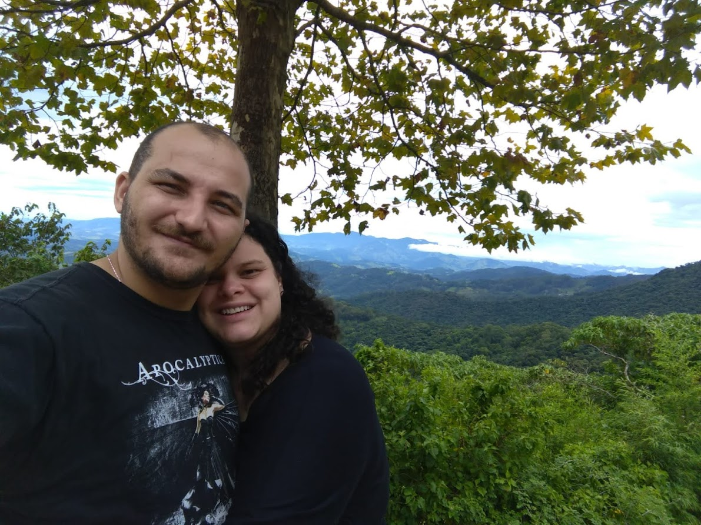
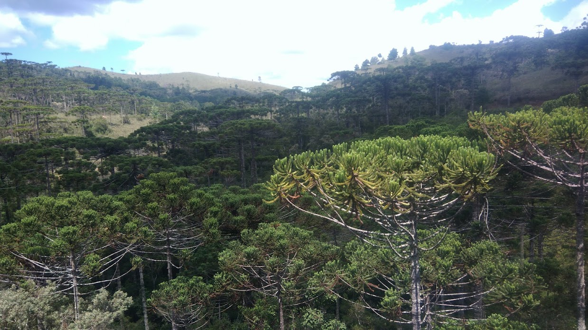
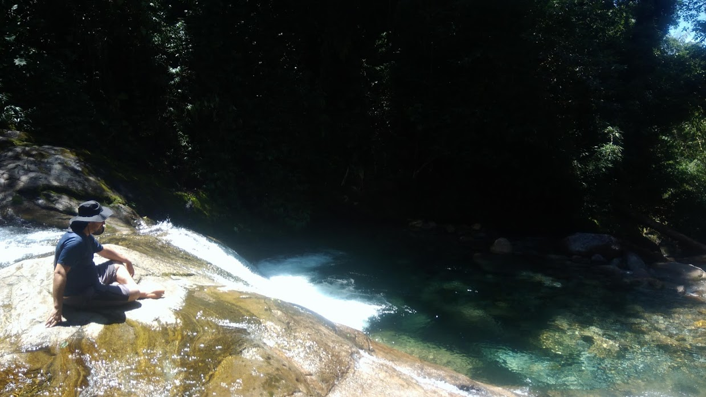

Me, and my wife, Rubia :)

Araucarias from Campos do Jordão

Pedra Redonda mount at Monte Verde

Serrinha do Alambari at Penedo
Selected Highlights!
-
{% for post in paginator.posts %}
{% if post.is_highlight %}
{% include remove_double_slash.html %}
- {% endif %} {% endfor %}